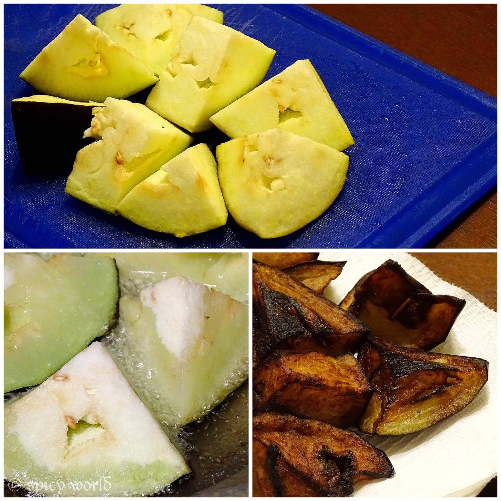
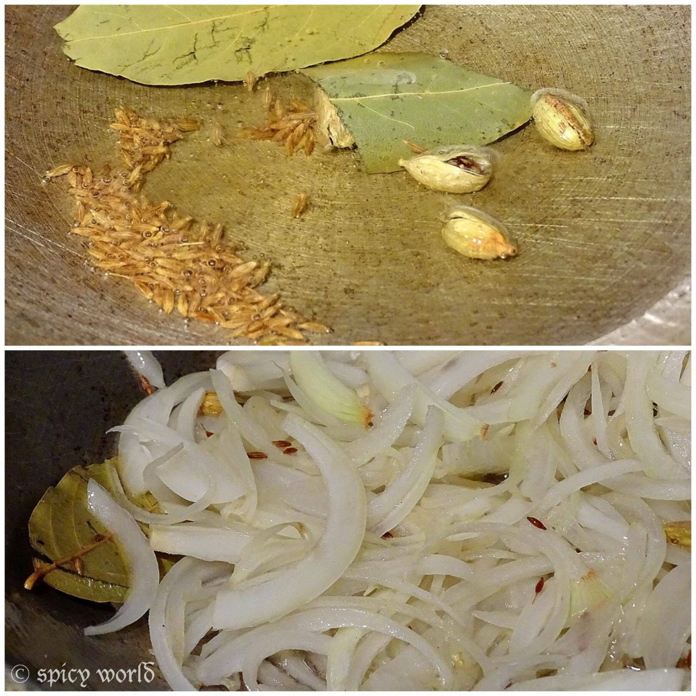
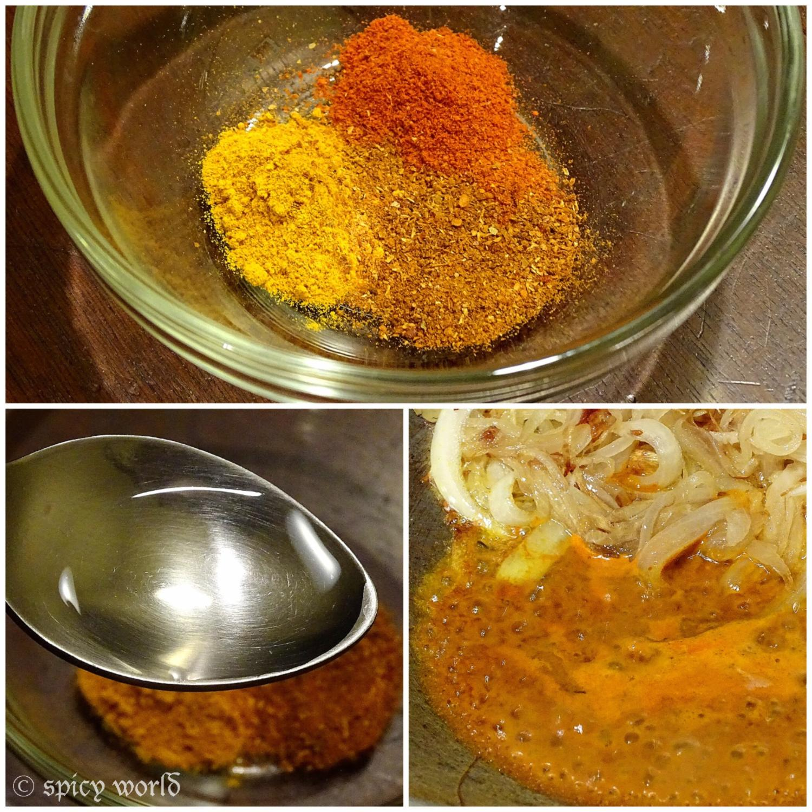
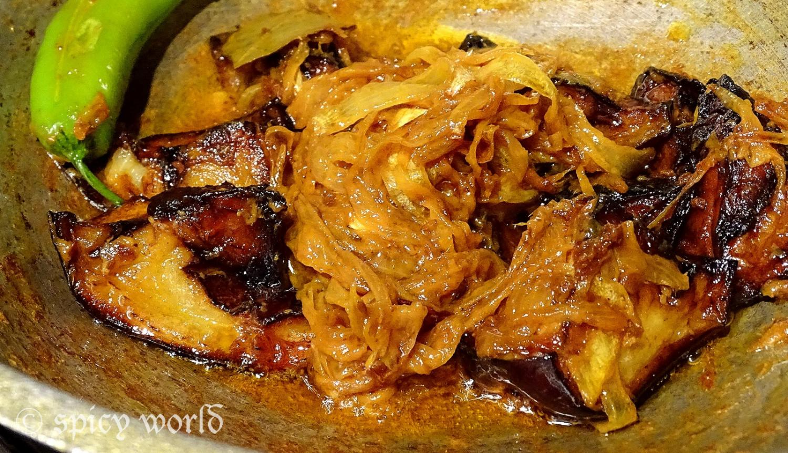
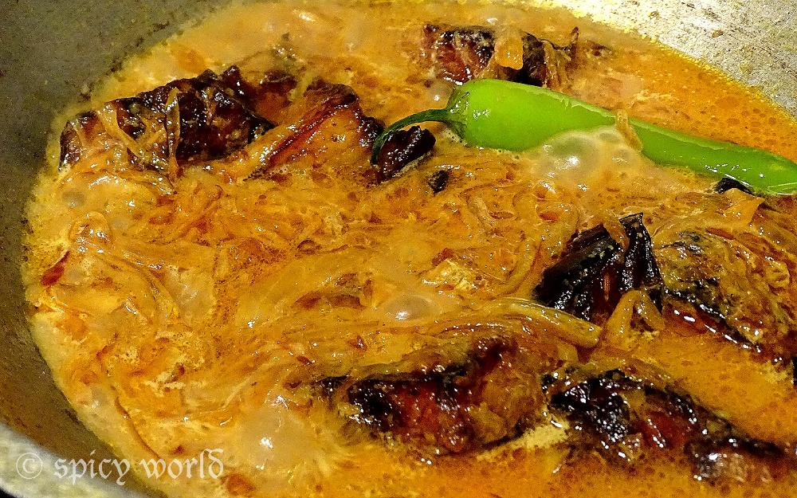

Khatta Baingan (khatta begun)
'Khatta' means tangy/sour and 'baingan' means eggplant/begun. Most probably this dish is from Kashmiri cuisin. I do not have much knowledge about this cuisin but I can assure you that you will never forget this eggplant recipe. Last wednesday we both wanted to eat veg in dinner and I had an eggplant(begun) in my fridge. So, I googled for some spicy veg recipes made with eggplant, and my eyes got stuck to this one. The recipe is simple and very easy to make. I just made a little change, as 'he' doesn't like tamarind (tetul/imli) in his food, I had to use yogurt instead of it. Believe me the taste came out really delicious. It goes very well with steamed rice or plain roti. Try this in your kitchen and share your story with us.
")
Ingredients
- 8-10 big cubes of eggplant.
- 1 cup thinly sliced onion.
- 1 Teaspoon ginger and garlic paste.
- 1 green chilli.
- Whole spices(1 Teaspoon cumin seeds, 2 bay leaf, 3 green cardamoms).
- Spice powder(1 Teaspoon turmeric powder, 1 Teaspoon red chilli powder, 1 Teaspoon garam masala powder).
- 4-5 Tablespoons of beaten yogurt / curd.
- Salt and sugar.
- Warm water.
- 5 Teaspoons mustard oil.
- White oil for deep fry the eggplant cubes.
")
Steps





- Enjoy this hot with plain roti or steamed rice.
 (Final)")